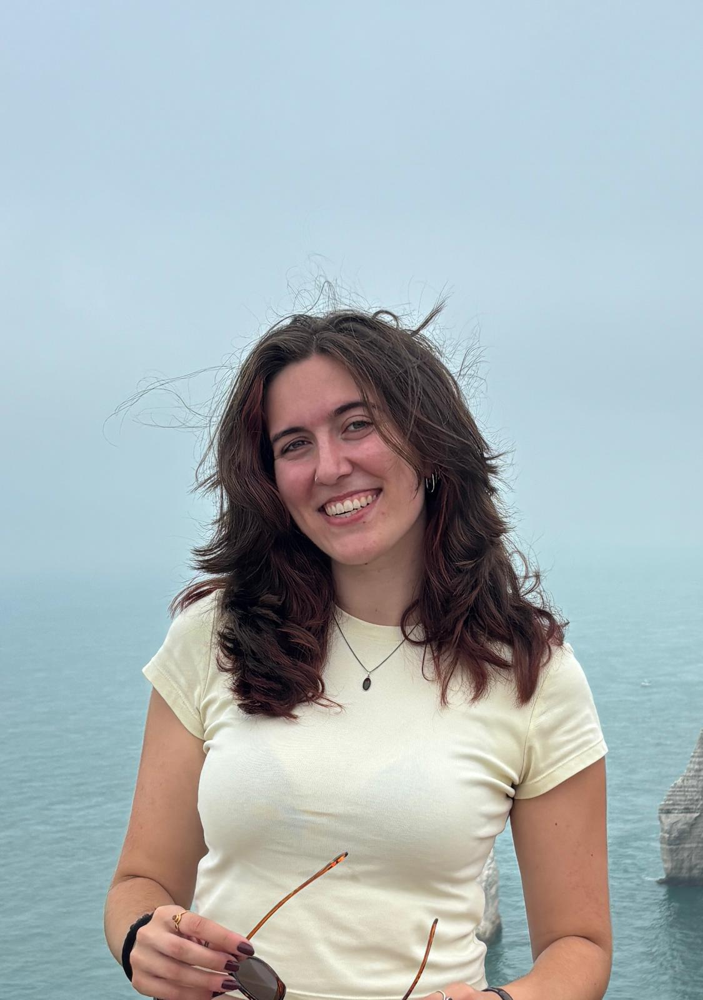

Let’s start with some of my favourite things to do:
These are just a small representation of my favourite books, as my bookshelves are way too full to actually be able to name all of my favourites ;)
So before I got here I studied my bachelors degree at the University of Amsterdam. I studied English Language and Culture and did a specialization in English Literature. During my bachelors I studied abroad for a semester at the University of Nottingham, where I studied 1700-1900 English lit and Old Norse mythology. The final semester of my bachelors kept me busy with my bachelor thesis, which I wrote on cultural activism in Harry Potter fan fiction. All in all I loved my three years at the University of Amsterdam, but I’m also excited to get to know a new university. Oh! Before my bachelors degree I did a Propedeuse year at the Amsterdam University of Applied Sciences in order to qualify for University. It was a teacher training program, including an internship where I taught English to high schoolers. While a fun and educational year, I was happy to make the switch to University and leave my teaching days behind me ;) I’d say that's about it!
| The End!, I'd say thats about it! I look forward to seeing what this program will teach me & to get to know all of you a little better. |